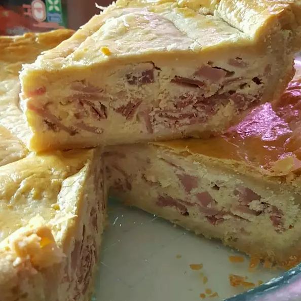

Easter Meat Pie

Description
This meat pie is a winner every Easter. Stuffed full of ham, salami, and prosciutto, as well as ricotta, Parmesan, and mozzarella cheeses, this pie really satisfies!
Ingredients
- 4 (9 inch) unbaked pie crusts
- 2 pounds ricotta cheese
- 6 eggs
- 8 ounces mozzarella cheese, grated
- 1 pound cooked ham, chopped
- ½ pound Genoa salami, chopped
- ¼ pound prosciutto, chopped
- ¼ cup grated Parmesan cheese
Steps
- Preheat oven to 325 degrees F (165 degrees C).
- Place ricotta in a large mixing bowl and add eggs one at a time while mixing on low speed. Stir in mozzarella, ham, salami, and prosciutto until all ingredients are well combined. Line two 9 inch pans with pastry. Spoon half of mixture into each pan. Sprinkle half of the Parmesan cheese over each pie, then cover with top pastry. Crimp edges and cut steam vents in tops.
- Bake in preheated oven for 1 hour, until crust is golden brown. Cool on racks.